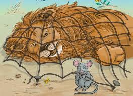

|  |
EL León y el Ratón(Cuentos de la selva 1998)Había una vez un fiero león que dominaba toda la selva que le circundaba. No en balde a estos fuertes felinos se les suele conocer como el rey de esos parajes.
Animal que pasara por algún sitio cercano a él, animal que debía reverenciarlo y mostrarle sus respetos, si es que quería evitar algún mal momento.
Un día, tras mucha actividad física, el león se echó en un descampado a tomar una siesta para reparar sus fuerzas. Estaba tan cansado que cayó en un sueño profundo tras tan sólo unos segundos.
Mientras dormía por allí apareció un pequeño ratón muy inquieto y juguetón, al que le hizo gracia ver a aquel enorme león tirado en medio de la nada y roncando a pata suelta.
Al roedor le llamó esto tanto la atención que decidió encaramarse imprudentemente en aquel bulto animal y empezar a jugar allí. Así, corría de aquí para allá sobre el cuerpo del león, sin percatarse que sus pasitos hacían cosquillas y perturbaban el sueño del fiero animal.
A medida que fue pasando el tiempo para el león se hicieron insostenibles las cosquillas y despertó abruptamente. Cuando se percató qué era lo que había provocado la interrupción de su sueño dio un zarpazo tan rápido para atraparlo, que el pobre ratón no tuvo la más mínima oportunidad de escapar.
De esta forma el león tenía aprisionado al roedor entre sus garras y violentamente le preguntó:
-¿Quién diablos te crees que eres pequeño animal? ¿Acaso no sabes quién soy? ¿Por qué eres tan imprudente como para interrumpir mi descanso? ¿No aprecias tu vida? Soy el rey de la selva y todos me deben respeto. Nadie se atreve a molestarme y menos mientras duermo.
Muerto de miedo y comprendiendo su osadía el ratoncito pidió clemencia al fiero animal.
-Lo siento señor. Juro que no volveré a cometer tal tontería. Le ruego me perdone la vida y estaré en deuda eterna con usted. Quién sabe si pueda serle útil de alguna forma en el futuro.
-Útil tú a mí –dijo el león con sorna. –No seas tonto. ¿Cómo podrá un animal tan minúsculo como tú ser útil o ayudar a un animal tan grande y poderoso como yo? Si fuera solo por eso, realmente mereces morir por tus atrevimientos.
-No señor por favor –rogó el ratón. –Le pido reconsidere su decisión y deje vivir a este pobre y tonto animalito. Juro que no volveré a molestarlo nunca más.
Al ver llorar sin medida al pequeño roedor, el león se apiadó de su caso y lo dejó vivir. Además, estaba tan lleno por el atraco de comida que se había dado antes de dormir, que realmente un pequeño ratón no haría la diferencia para su sistema digestivo.
Así lo soltó, no sin antes advertirle que si se volvía tan osado una próxima vez, no viviría para contarlo. |